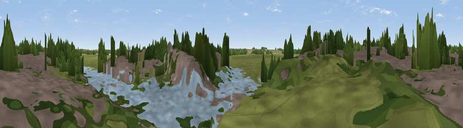

Viewpoint near Huntingdon
#45384 in England · top 82% of its area beats it · near HuntingdonWhere it is
The exact computed spot (TL 24162 71468). Click the marker for map links.
The view, rendered

A 360° render of this exact spot computed from the terrain model, tree cover and land cover — summer colours, afternoon light, calibrated against photographs of famous viewpoints. Real trees, hedges and buildings will differ in detail.
The panorama
Grey silhouette: terrain skyline in each direction (720 bearings, Earth curvature and refraction included). Dashed green: skyline with trees (+15 m) and buildings (+8 m) as obstacles. Blue strip: how far the ground is visible on each bearing.
Where the view opens
Wedge length = distance to the farthest visible ground on that bearing (vegetation-aware). Rings at 10, 25 and 50 km.
What fills the view
32% woodland · 26% grassland · 24% built-up · 13% water · 5% cropland
Angular shares of the visible panorama (visual magnitude), not map area. Landscape diversity 0.64 (0–1 Shannon).
Key numbers
More beautiful places nearby
The staircase of upgrades: each row has a higher view potential than everything closer. Driving times are estimates from straight-line distance, calibrated against real road routing — check an actual route before setting out.
| Place | Direction | Drive | Score |
|---|---|---|---|
| Viewpoint near Huntingdon | W · 1 km | ~4 min | 15.5 |
| Viewpoint near Brampton | SW · 4 km | ~9 min | 30.2 |
| Viewpoint near Sawtry | NNW · 13 km | ~24 min | 38.0 |
| New Farm Hill | SSE · 22 km | ~36 min | 41.3 |
| Hill summit | SSW · 23 km | ~38 min | 43.8 |
| Viewpoint near Orwell | SSE · 24 km | ~39 min | 44.9 |
| Viewpoint near Stapleford | SE · 31 km | ~48 min | 52.9 |
| Viewpoint near Royston | SSE · 33 km | ~51 min | 56.6 |
52.32727, -0.17947 · source: osm viewpoint · position refined by local search. Computed location — check access rights before visiting.